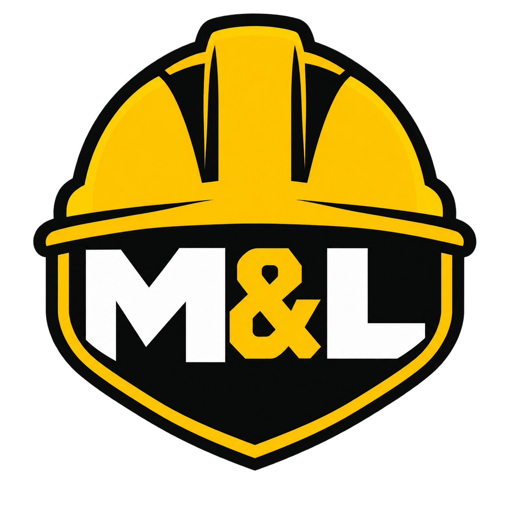

Immediate category signal
The hard-hat silhouette communicates occupational safety before a visitor reads a word.
Strategy · Identity · Web design · Engineering
Transforming an occupational safety consultancy’s working business overview into a confident, high-impact digital presence built for Namibian workplaces.

ASSESS / PREVENT / PROTECT
The starting point combined a detailed service plan with an early poster-style graphic. The opportunity was to preserve the substance—risk, compliance, training, incident response and safety culture—while rebuilding the public experience around clarity and trust.
The result is direct and operational: visitors can understand the offer, see how an engagement works and contact the consultancy without fighting through corporate filler.
The hard-hat silhouette communicates occupational safety before a visitor reads a word.
A shield-like silhouette and M&L monogram hold together from favicon scale to large-format branding.
Safety yellow, near-black and white replace visual clutter with a disciplined, credible system.
The visual direction draws from dune light, Atlantic depth and red earth. National colours appear as precise accents rather than a literal flag, keeping the experience locally grounded and internationally credible.
Mobile hardening shaped the production pass: readable display type, 44px-plus targets, overflow-safe contacts, simplified brand composition and a 377 KB hero asset instead of a multi-megabyte original.
M & L Occupational Consulting Agents cc